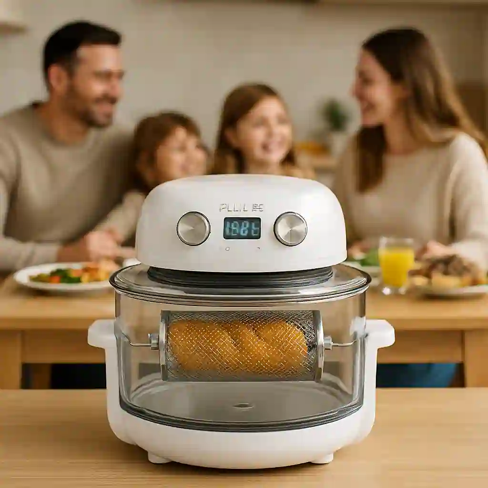
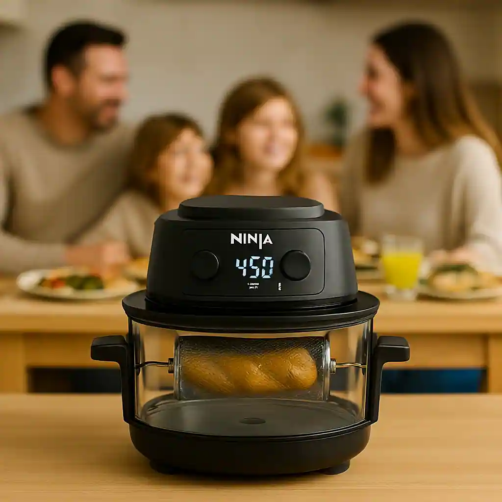
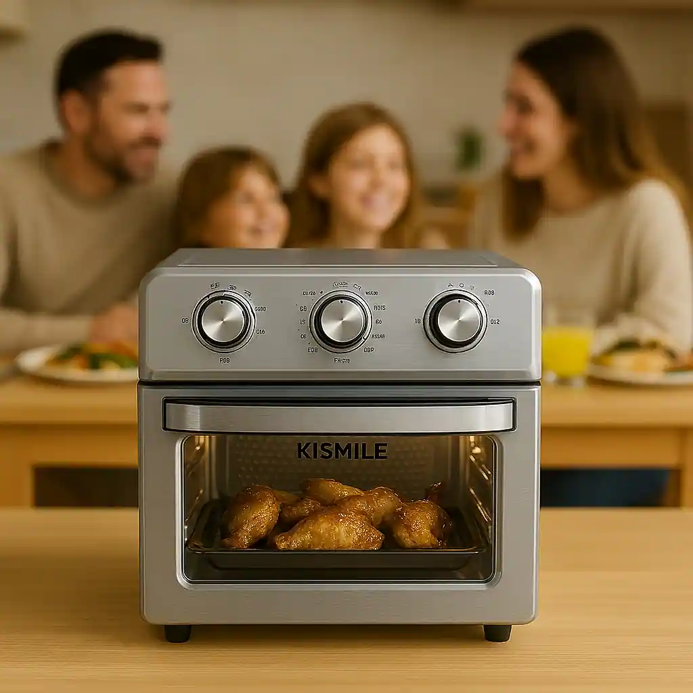

"Your family deserves appliances that are genuinely safe. We strip away marketing fluff to deliver evidence-backed guidance on material purity, chemical-free cooking, and long-term health protection."
Why Material Purity Matters
Most air fryers still rely on non-stick coatings—silently leaching chemicals into meals. Only glass and stainless surfaces eliminate this risk entirely. Anything else is a compromise.
How to Choose the Safest Air Fryer
Following these guidelines will ensure that you choose appliances that are safe, durable, and aligned with our mission-driven standards which prioritize health over convenience, every single time.
- Material Contact: Glass or stainless only in contact with food.
- Eliminate Coatings: Avoid PTFE, PFOA, and ceramic non-stick.
- Temperature Stability: Components must not degrade under high heat.
- Certifications & Transparency: Verify documentation & third-party recognition.
- Ease of Cleaning: Glass & stainless are easy to inspect & maintain.
| Feature | Borosilicate Glass | 304 Stainless | Standard Non-Stick |
|---|---|---|---|
| Safety | 100% Inert | Food Grade | Chemical Risk |
| Visibility | Perfect | None | None |
| Cleanup | Easy/Visual | Dishwasher Safe | Fragile Coating |
Side-by-Side Comparison of Top Air Fryers
These are the only models we recommend for true chemical-free cooking — anything lower scored is a risk.
| Feature | Fritaire Pro | Ninja Crispi Pro | Kismile 18QT |
|---|---|---|---|
| Safety Score (/100) | 96 Top Safety Pick | 94 | 90 |
| Material | Glass + Stainless | Glass + Metal | Glass + Stainless/Metal |
| Coating | None | None | None |
| Pros | Chemical-free, durable, easy to inspect | Chemical-free, durable, simple design | Glass + stainless, chemical-free, durable |
| Cons | Heavier, fewer presets | Heavier, takes up more storage space | Heavier, limited presets |
| Check Current Price | Secure Yours Before It Sells Out Read Full Review | Secure Yours Before It Sells Out Read Full Review | Secure Yours Before It Sells Out Read Full Review |
Research Behind Our Safety Scores
Every air fryer on this page is evaluated using a transparent safety framework based on material stability, heat resistance, and chemical exposure risk.
Deep Dive: The 2026 Safe List

Fritaire Glass Air Fryer
True glass + stainless construction with a unique self-cleaning cycle. The gold standard for visibility and purity.
- 9-in-1 Versatility
- Zero Chemical Leaching

Ninja Crispi Pro 6-in-1
A powerhouse performer that uses medical-grade materials to achieve 450°F Max Crisp without off-gassing.
- Dishwasher Safe Glass
- High-Heat Stability

Kismile Wonder Oven
Best for large families. An 18QT capacity combo that relies on stainless steel and glass for absolute purity.
- Fits 10" Pizzas
- Convection Accuracy
Every Meal Matters —
Don't Risk Your Family's Health
Glass + stainless only. No coatings. No compromises.
Make the safe choice today.
This site contains affiliate links. We may earn a commission at no additional cost to you. We only recommend products that meet strict material purity criteria.